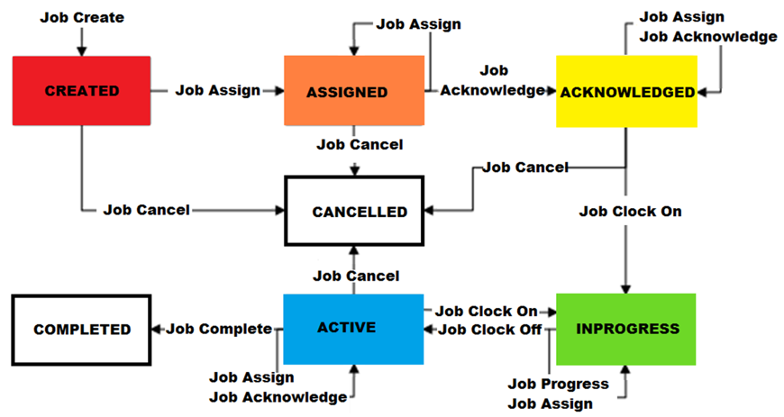

Hintergrundinformationen zur Jobsteuerung
Die Jobsteuerungsfunktion konzentriert sich auf Ressourcen anstelle von Losen oder Containern. Sie bietet die Möglichkeit, Ressourcenwartung und Reparaturen für Maschinen, Anlagen oder Werkzeuge zu verwalten. "Job erstellen" ist so konzipiert, dass eine nachhaltige Wartung und kontinuierliche Verbesserung in Ihr Unternehmen integriert werden, indem fehlerhafte Reparaturen oder unzureichende Wartungen verhindert werden.
Andere Vorteile der Verwendung der Jobsteuerung sind die Verbesserung der Effizienz, die Bereitstellung von Wartungsdatensätzen und die Vermeidung kostspieliger Reparaturarbeiten. Sie hilft auch, menschliche Fehler zu vermeiden, da das vordefinierte Wartungsverfahren über den Jobauftrag und das Jobmodell eingerichtet wird. So können Techniker ohne Unsicherheit mit der zugewiesenen Aufgabe fortfahren.
Das folgende Diagramm zeigt einen Überblick über den Jobverarbeitungsablauf, der in der Regel von Wartungsteams, Supervisoren und Technikern behandelt wird. Wie im Fluss widergespiegelt, kann der Job erstellt werden, entweder:
| • | Manuell durch Benutzer, z. B. Wartungsingenieur oder Supervisor, oder |
| • | Automatisch vom System basierend auf konfigurierten Bedingungen. |
Ein Supervisor weist die erstellten Jobs einem oder mehreren Technikern zu. Nur zugewiesene Techniker können den Job bestätigen und bearbeiten. Wie im Diagramm dargestellt, führt der Techniker jede Stufe (Schritt) aus, die für den Job konfiguriert ist. Einige Schritte können eine Teileanforderung umfassen. Wenn der Techniker den letzten konfigurierten Schritt abschließt, kann der Job als abgeschlossen oder geschlossen aktualisiert werden. Das System lässt das Schließen eines Jobs mit einer ausstehenden Teileanforderung nicht zu. "Track In" ist nicht zulässig, wenn eine Ausrüstung mit einem offenen Job verknüpft ist.
Ein Job kann auch über die Transaktion "Job abbrechen" bei verschiedenen Auftragsstatus abgebrochen werden, mit Ausnahme von "IN BEARBEITUNG".
Das folgende Diagramm zeigt die Unterschiede zwischen den Aufgaben für den Supervisor und den Techniker. Wie im Diagramm zu sehen ist, erstellt der Supervisor den Job, weist den Technikern den Job zu und gibt den Abschluss des Jobs an. Dieser Prozess hilft dem Supervisor, den Status durchgängig zu überwachen. Die zugewiesenen Techniker beginnen damit, den Job zu bestätigen, anzustempeln, um den Arbeitsbeginn anzugeben, und nach Abschluss des zugewiesenen Jobs abzustempeln.

Weitere Informationen zu Jobsteuerungstransaktionen finden Sie in den folgenden Unterthemen.
"Einfacher Modus" ist ein Kontrollkästchen, das auf der Objektseite "Jobmodell" und auf der Transaktionsseite "Job erstellen" verfügbar ist. Jobs, die für den einfachen Modus konfiguriert sind, werden von der Transaktion "Jobfortschritt" anders verarbeitet. Nachdem die erste konfigurierte Stufe abgeschlossen ist, geht die Transaktion direkt zur letzten konfigurierten Stufe weiter.
Damit der einfache Modus erwartungsgemäß funktioniert, muss Folgendes zutreffen:
| • | Im letzten konfigurierten Schritt muss "Beendet erlauben" aktiviert sein. |
| • | Entweder der erste oder der letzte Schritt muss so konfiguriert sein, dass er Symptomcode, Ursachencode und Reparaturcode erfordert. |
Jeder Job hat ein Jobstatus-Attribut, das den aktuellen Punkt des Jobs im Jobverarbeitungsablauf angibt. Dieses Diagramm zeigt die schrittweise Änderung des Job-Status als Ergebnis der ausgeführten Jobsteuerungstransaktionen.

Ein neu erstellter Job beginnt mit dem Status "ERSTELLT". Sobald er zugewiesen ist, ändert sich der Status automatisch in "ZUGEWIESEN". Der Status ändert sich in "BESTÄTIGT", wenn der Techniker den Job bestätigt, aber nicht gestartet hat. Der Status wird automatisch auf "IN BEARBEITUNG" aktualisiert, wenn der Techniker angestempelt hat (dies weist darauf hin, dass er an dem Job arbeitet). Am Ende der Schicht oder wenn der Techniker für eine Weile weg sein muss, kann er optional vom Job abstempeln und der Status des Jobs wird "AKTIV".
Nach der Teilnahme am letzten Schritt im zugewiesenen Job muss der Techniker abstempeln. Normalerweise ist der Wartungs-Supervisor oder -Leiter derjenige, der den Job als abgeschlossen markiert. Während der verschiedenen Jobstatus, mit Ausnahme von "IN BEARBEITUNG", kann der Job abgebrochen werden.